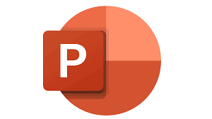

.jpeg)
.jpeg)
.jpeg)
.webp)

What is hardware? Hardware refers to the physical components of a computer system that you can see and touch. This includes devices such as the central processing unit (CPU), memory modules, hard drives, keyboards, mice, monitors, and other peripheral devices
Software is the intangible set of instructions, data, or programs that tells a computer or device exactly what to do. It acts as the bridge between human needs and machine capabilities, controlling operations and executing specific tasks
.jpeg)

.jpeg)
.png)
.jpeg)
Computer software is generally divided into three primary categories: System Software, Application Software, and Utility Software.
1. System Software System software serves as the foundation and the "backbone" of computing. It acts as a bridge between the physical hardware and the other programs running on the system. Without it, you wouldn't be able to turn on or operate your device
This is the software you directly interact with to perform specific tasks, create content, or engage in entertainment. Also commonly referred to as "apps," this software relies on System Software to function